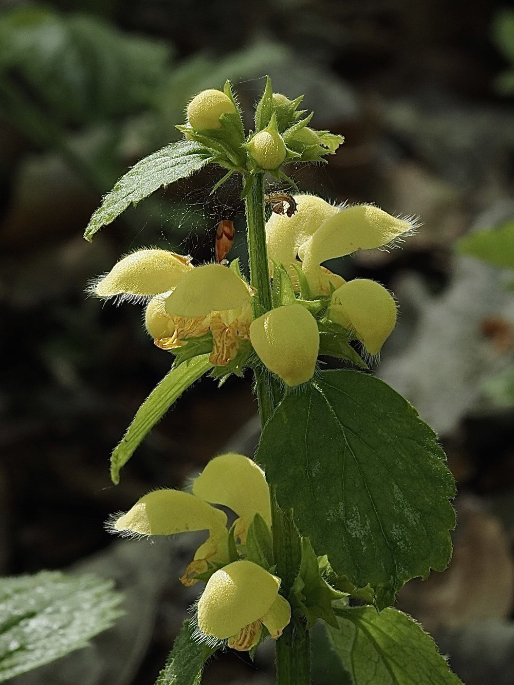

Nr. 15 · Frühblüher im Wald
Goldnessel
Lamium galeobdolon
Gold im Halbschatten – und eine Blüte mit falschem Versprechen.


Das goldene Versprechen an Hummeln
Die Goldnessel gehört zu den Lippenblütlern – und wie viele ihrer Familienmitglieder täuscht sie: Die gelbe Blüte wirbt mit Nektar, aber kurzrüsselige Insekten kommen nicht heran. Nur langrüsselige Hummeln können die Blüte vollständig ausschöpfen – und bestäuben sie dabei zuverlässig.
Ausläufer ohne Grenzen
Die Goldnessel breitet sich aggressiv per Ausläufer aus – die Gartenvariante ‚Variegatum' mit silbrigen Blattflecken ist in manchen Ländern als invasiv eingestuft. Im heimischen Wald ist sie dagegen eine wichtige Bodendecker-Pflanze, die Erosion verhindert und Lebensraum für Kleintiere schafft.
Wissenswertes & Merksätze
Lippenblütler-Familie
Die Goldnessel ist verwandt mit Minze, Salbei, Thymian und Lavendel – allesamt aromatische Küchen- und Heilpflanzen.
Zeigerpflanze
Grosse Bestände zeigen gute Bodenqualität an – und oft auch Nähe zu ehemaligen Siedlungen oder Klostergärten.
Gartenvariante invasiv
Lamium galeobdolon Variegatum verdrängt in manchen Regionen heimische Bodenvegetation – ein aktuelles Beispiel für Neophyten-Probleme.